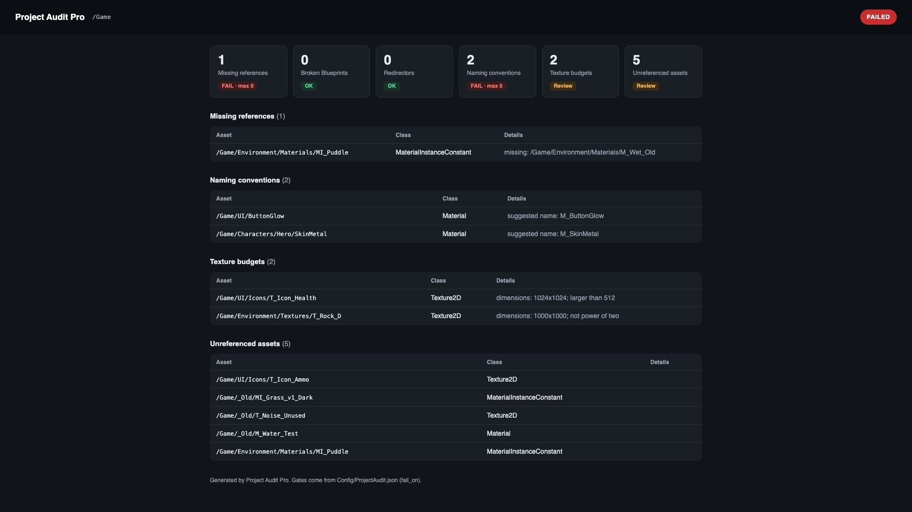
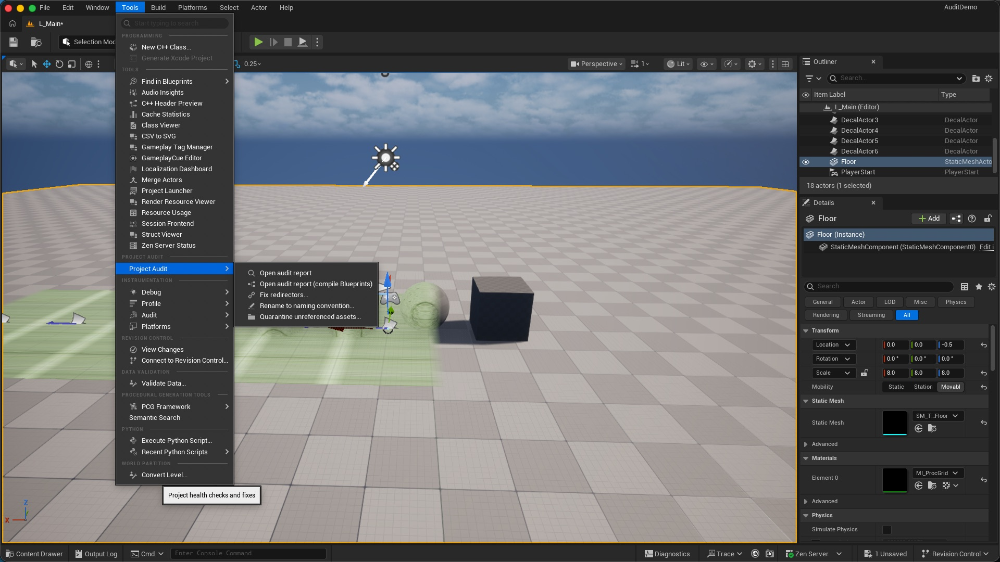
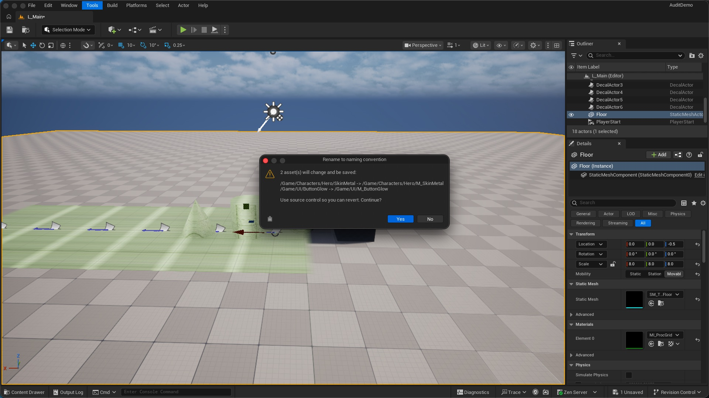
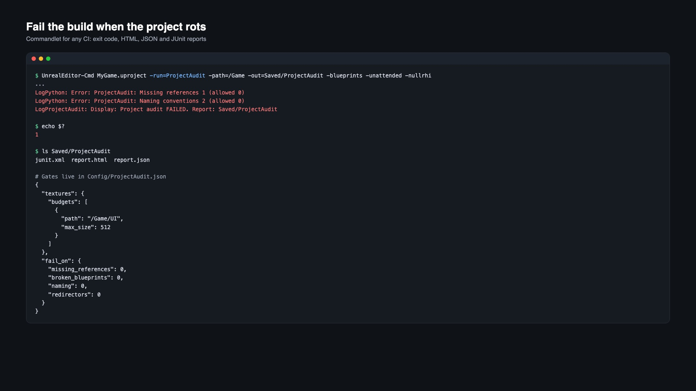
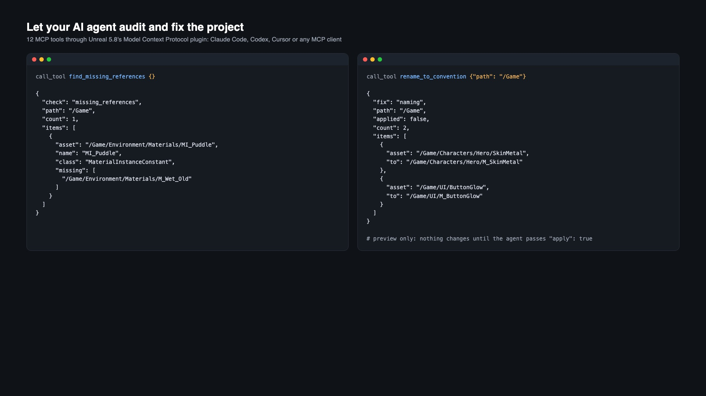

Find and fix what rots in an Unreal project
Unreferenced assets, broken references, leftover redirectors, naming drift, oversized textures and Blueprints that no longer compile. From the editor menu, from CI, or from your AI agent over MCP.
Free Lite version on GitHub
Six checks
Unreferenced assets, missing references, redirectors, naming conventions, texture budgets per folder, broken Blueprints.
One-click fixes
Fix redirectors, rename to convention with every reference updated, quarantine unused assets instead of deleting them. Every fix previews first.
CI gates
A commandlet writes HTML, JSON and JUnit reports and fails the build when a check goes over your limit.
12 MCP tools
Claude Code, Codex, Cursor or any MCP client can audit and fix the project through Unreal 5.8's MCP plugin.
Install
- Install the plugin from Fab to the engine, or copy it to
YourProject/Plugins/ProjectAuditPro. - Enable Project Audit Pro in Edit > Plugins and restart the editor. Python Editor Script Plugin and Editor Scripting Utilities turn on with it.
- Open Tools > Project Audit.
Requires Unreal Engine 5.8 on Windows, macOS or Linux. Editor only: nothing ships in your game.
Editor menu

- Open audit report: runs every check on
/Gameand opens the HTML report in your browser. - Open audit report (compile Blueprints): also compiles every Blueprint. Slower on big projects.
- Fix redirectors...: repoints references and deletes the redirectors.
- Rename to naming convention...: adds the expected prefix (
RustyMetal→M_RustyMetal) and updates every reference. - Quarantine unreferenced assets...: moves them to
/Game/_Quarantine, keeping the folder layout. Play-test, then delete the folder.

Fixes save the changed assets. Commit to source control first so you can revert.
Project rules
Copy ProjectAudit.example.json from the plugin folder to YourProject/Config/ProjectAudit.json and edit it. Anything you leave out keeps the default.
{
"naming": {
"prefixes": { "Blueprint": "BP_", "SoundWave": "SW_", "CurveFloat": "" },
"ignore_paths": ["/Game/ThirdParty", "/Game/Megascans"]
},
"unreferenced": { "ignore_paths": ["/Game/Maps", "/Game/Data"] },
"textures": {
"default_max_size": 4096,
"budgets": [
{ "path": "/Game/UI", "max_size": 1024 },
{ "path": "/Game/Characters/Hero", "max_size": 8192 }
],
"require_power_of_two": true
},
"quarantine_path": "/Game/_Quarantine",
"fail_on": {
"missing_references": 0, "broken_blueprints": 0, "redirectors": 0,
"naming": 50, "textures": null, "unreferenced_assets": null
}
}
naming.prefixes: class name → prefix. Set a class to""to stop checking it.naming.ignore_paths,unreferenced.ignore_paths: folders to skip (marketplace packs, data loaded by path).textures.budgets: max width/height per folder; the most specific folder wins.fail_on: the most findings a check may have before CI fails.nullreports without failing.
CI
UnrealEditor-Cmd MyGame.uproject -run=ProjectAudit -path=/Game -out=Saved/ProjectAudit -blueprints -unattended -nullrhi
| Exit code | Meaning |
|---|---|
| 0 | Every gated check is within its limit |
| 1 | At least one check is over its limit |
| 2 | The audit could not run |
Output: report.html, report.json, junit.xml. Point your CI's test report step (Jenkins, GitHub Actions, GitLab, TeamCity) at junit.xml.

MCP (AI agents)
Enable Model Context Protocol and All Toolsets too (both Experimental in 5.8), then in the editor console:
ModelContextProtocol.StartServer 18765 ModelContextProtocol.GenerateClientConfig ClaudeCode
Tools (toolset project_audit_pro.toolset.ProjectAuditProTools): audit_project, find_unreferenced_assets, find_missing_references, find_redirectors, check_naming, check_textures, find_broken_blueprints, fix_redirectors, rename_to_convention, quarantine_unreferenced, write_report, get_rules. Every argument is optional; path defaults to /Game.
Ask: “Audit /Game, show me what you would rename, then fix the redirectors.” Fix tools only preview unless the agent passes apply: true.

Port 8000 already taken? ModelContextProtocol.StartServer without a port always uses 8000 in 5.8. Pass a port as above and point your client at http://127.0.0.1:18765/mcp.
Python
from project_audit_pro import audit, fixes, ci
print(audit.to_json(audit.run_all("/Game")))
fixes.fix_redirectors("/Game", apply=False) # preview
ci.write_report("/Game") # Saved/ProjectAudit/report.html
Notes and limits
- Unreferenced does not mean unused: assets loaded only from config, by soft paths built at runtime or by Primary Asset rules can still appear. Add those folders to
unreferenced.ignore_paths, and quarantine instead of deleting. - Maps are entry points and never reported as unreferenced.
- Compiling Blueprints loads each one, so that check is slower on big projects.
- Tested on Unreal Engine 5.8.4. The MCP plugin is Experimental in 5.8; everything else works without it.
Questions or a bug? See Support.